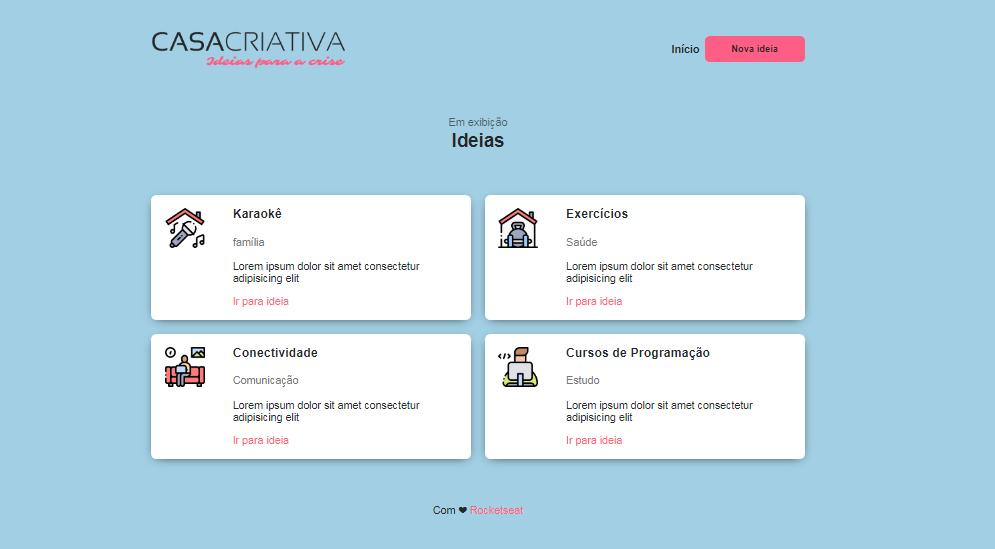
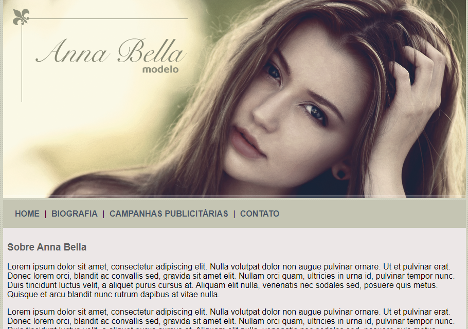
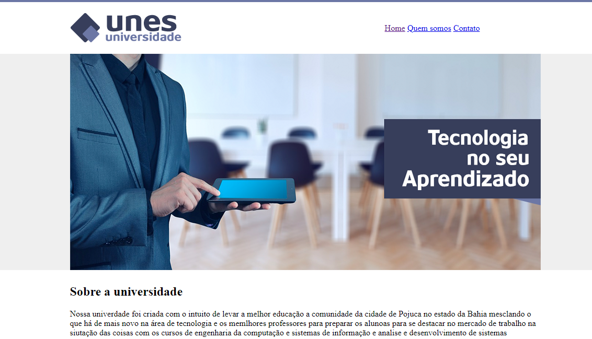
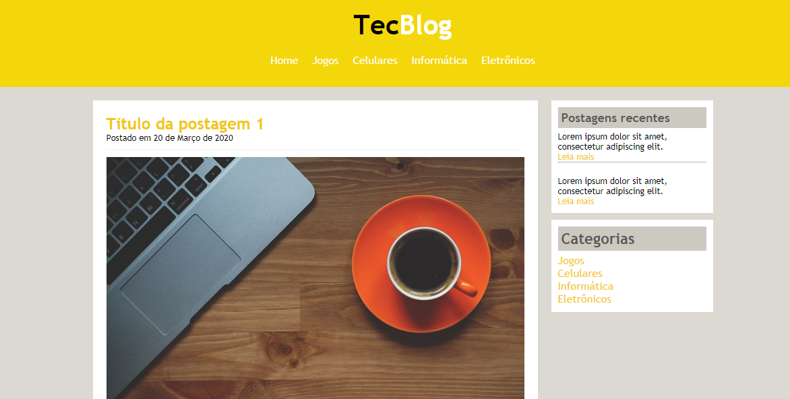

Prazer, meu nome é Winícius Xavier, atualmente trabalho como desenvolvedor Fullstack (front-end, back-end e mobile). Sou um profissional experiente, com larga experiencia de mercado, trabalhando em diversos projetos com as mais diferentes stacks. Ao longo da minha caminhada como desenvolvedor tive a oportunidade de fazer parte de diversas equipes que me impulsionaram a buscar cada vez mais conhecimento e aprimorar softskills.
Experiência nas seguintes tecnologias:
DEVOPS
BACK-END
FRONT-END
MOBILE
Principais projetos realizados:
Projeto de Website com o intuito de apresentar ideias de atividades para fazer em casa durante o período de quarentena. Criado durante o Workshopdev especial da Rocketseat, que foi ministrado pelo instrutor Mayk Brito. Essa foi minha primeira experiência com um projeto web que vai desde o front-end ao back-end.
Projeto de Website para a modelo fictíca Anna Bella. Esse foi o primeiro projeto em que fiz uma página com estilização simples no CSS.
Projeto de Website para a faculdade fictícia UNES. Primeiro website que fiz, ultilizando apenas o HTML, sem nenhuma estilização com CSS
Projeto de Website para o blog de tecnologia TecBlog. Nesse projeto foram utilizadas algumas propriedades que foram novidades pra mim, como o utilizar o hover nos links.
